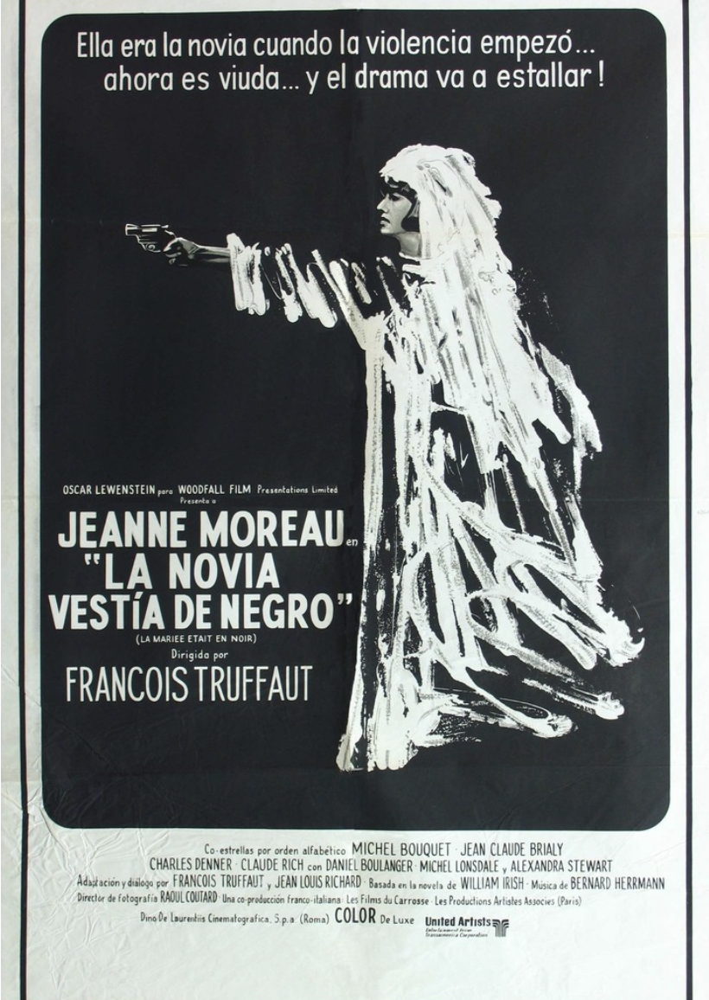
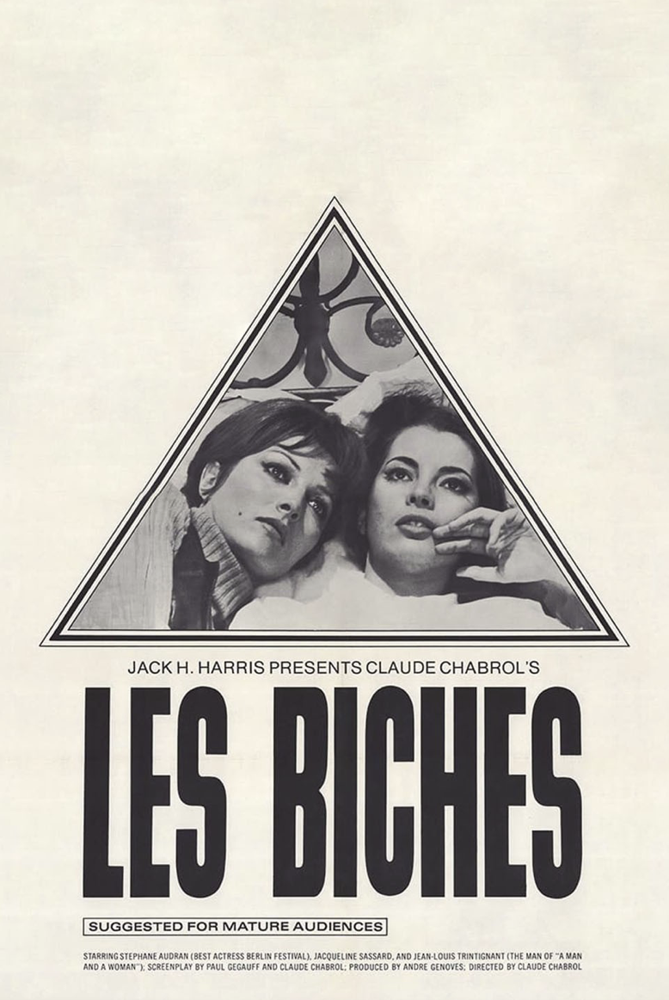

Viene del neorrealismo italiano, empieza a romper con el paternalismo, las historias grandilocuentes dejan de ser lo que se quiere contar; las historias cercanas, con las que las personas vean y entiendan lo que les rodea, mostrar realidades para generar una conciencia política, social y de clases, además de empezar a fijarse aún más en la forma de contar historias. Es la época de la revolución intelectual entonces la estructura cronológica empieza a sufrir cambios, hay saltos temporales, con elipsis que van y vienen en jumpcuts; la teoría de esta ola viene del marxismo que propone al arte como el único trabajo de liberación, el arte se convierte para ellos en una mercancía sin finalidad, algo con lo que capitalmente hablando no se puede hacer una fortuna, su valor radica en un nivel ideológico. Los proyectos estaban organizados desde pequeñas casas productoras, entre cineastas y sus familias, por el tipo de temáticas que tocaban, al inicio se formó como una corriente disidente en la que las temáticas eran de oposición al sistema, denunciando la forma en la que este afecta a la gente común, entendiendo que es lo que esta mal con el sistema para concientizarlo.

